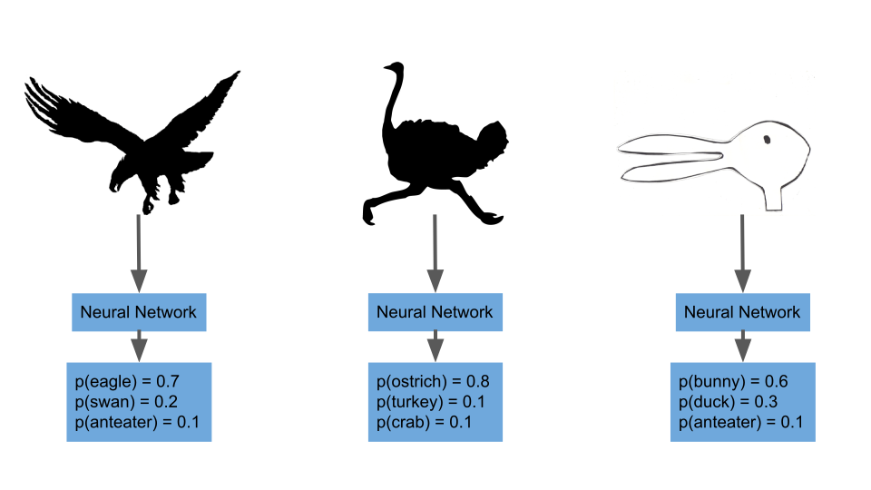
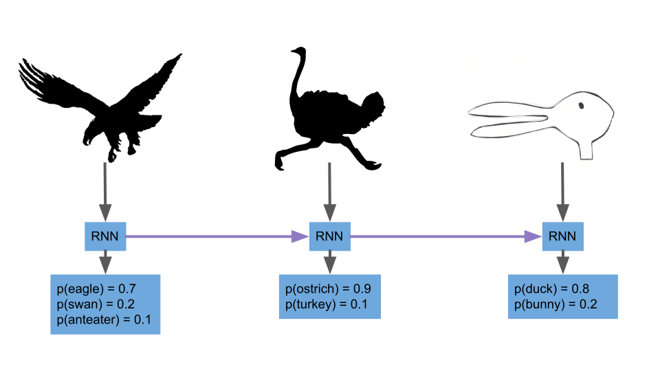

Recurrent neural networks use previous results as model inputs to make new predictions. Consider the following example. You've trained a neural network designed to accurately identify an animal by its shilouette. You run three images through your network and achieve the following results:
Your model correctly classified the first two as an eagle and ostrich respectively. However, the third image (which is clearly a duck) is classified as a bunny. The first two images seem to indicate that your model is being fed shilouettes from a library of bird images. Wouldn't it be great if we could use the information from the two previous iterations to inform our prediction on the third iteration? We can thanks to RNNs.
RNNs use the results of the previous iteration as input into the next iteration. In our case, the results of the first iteration (eagle) and used to help identify the ostrich. Next, the eagle and ostrich predictions are used to classify the final shilouette as a duck.
 {% endblock %}s